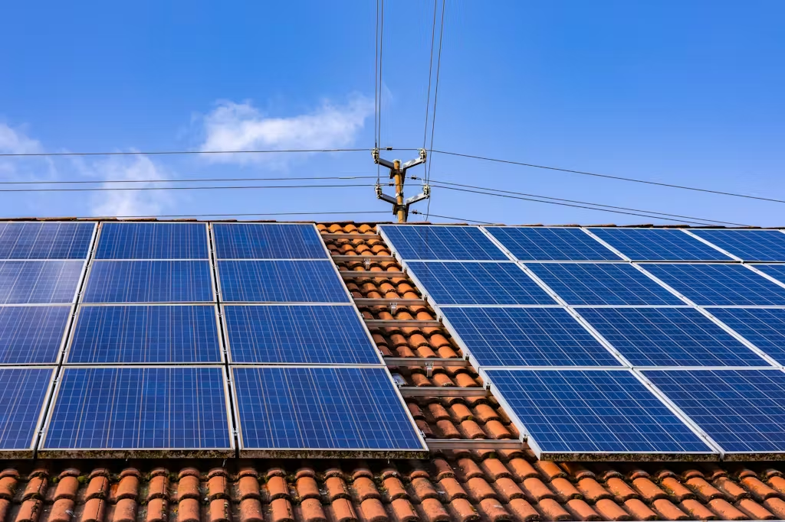
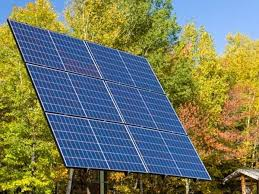
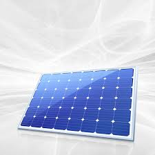

Cost-Effective • Durable • Reliable Performance



Polycrystalline panels are made from multiple silicon fragments, making them affordable and eco-friendly.A Polycrystalline Solar Panel is a photovoltaic panel made from multiple silicon crystals melted together. Because the manufacturing process is simpler and uses less waste, these panels are more affordable than monocrystalline panels.